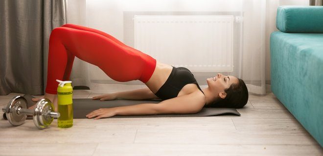

Хочеш бути здоровим?
Підтягнутим та енергійним?
Регулярні тренування
та
Раціональне харчування
Допоможуть тобі у цьому

Основні принципи здорового харчування відповідно до рекомендацій MyPlate: 
- Дотримуватися балансу між споживанням і втратою калорій,
- Насолоджуватися їжею: їсти повільно, не відволікаючись,
- Уникати великих порцій (наприклад, можна використовувати тарілки менших розмірів),
- їсти більше овочів для отримання калію, вітаміну D і клітковини,половину тарілки повинні займати овочі та фрукти,
- їсти менше продуктів з високим вмістом твердих, насичених та трансжирів, з додаванням цукру і солі, порівнювати кількість натрію в продуктах і обирати з більш низьким його вмістом,
- Пити воду замість солодких напоїв, щоб виключити цукор і зайві калорії.
Простий комплекс на кожен день:
- Присідання (зміцнення нижньої частини тіла)
- Присідання зі стрибком (сприяє посиленню м’язів і суглобів)
- Випади (зміцнення м’язів ніг і сідниць)
- Бурпі (функціональна динамічна вправа, що поєднує в собі елементи присідань, планки, віджимань від підлоги і стрибків вгору, задіює всі групи м’язів)
- Віджимання (розвиток грудних м’язів, трицепсів, всього плечового поясу)
- Прес (зміцнення м’язів живота)
- Планка (зміцнення м’язів, що стабілізують корпус: косі м’язи живота, поперечний і прямий м’язи, малі та середні сідничні, м’язи задньої поверхні стегна, клювовидно-плечовий)